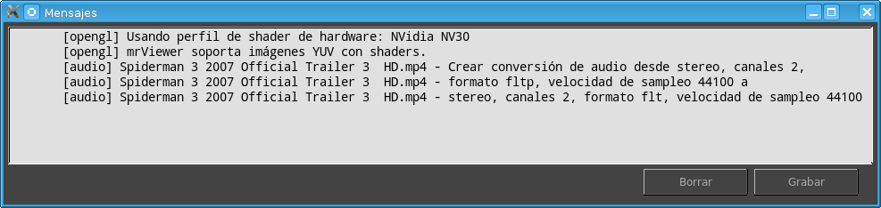

La Ventana de Mensajes muestra información acerca del funcionamiento de mrViewer. En la ventana de mensajes usted puede ver advertencias, errores y otra información que ocurre mientras se trabaja.
En el ejemplo, la función de la base de datos de mrViewer no está funcionando, y el archivo de la película salteó un cuadro que no pudo decodificar.